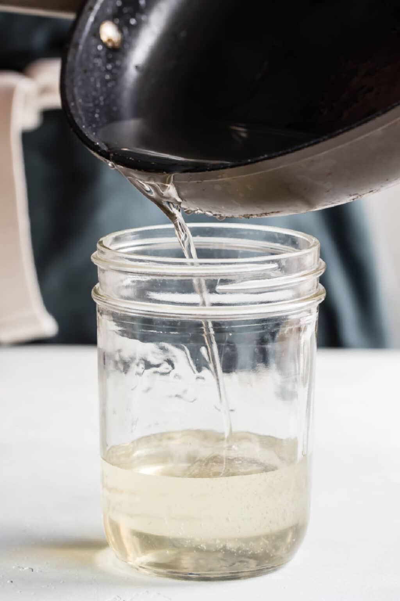

Really Simple Syrup!

This recipe is true to its name and is super simple, quick, and easy to make.
This simple syrip is perfect for sweetening drinks or any of your baking needs. By knowing this recipe you'll never have to buy it from the store again!
Ingredients:
- 1 cup granulated sugar
- 1 cup water
Steps:
- In a saucepan or small pot, combine water and sugar over medium-high heat
- Bring to a boil and stir until sugar has completely dissolved
- Remove from heat, place in a sterile, sealed container, and enjoy!